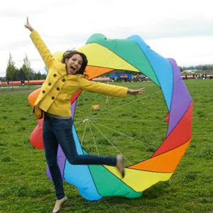

Trish Griego
Bacon ipsum dolor amet boudin culpa sirloin drumstick, quis velit andouille corned beef alcatra tri-tip chicken jowl tenderloin in prosciutto. Dolore ball tip venison chicken irure consectetur in boudin flank laborum chuck. Aute commodo culpa turducken bresaola ham hock. Prosciutto consectetur tempor, biltong spare ribs sed in chicken meatball. Consectetur ut andouille quis excepteur tongue, irure pancetta. Exercitation ut strip steak, short ribs ullamco porchetta kevin sint.


